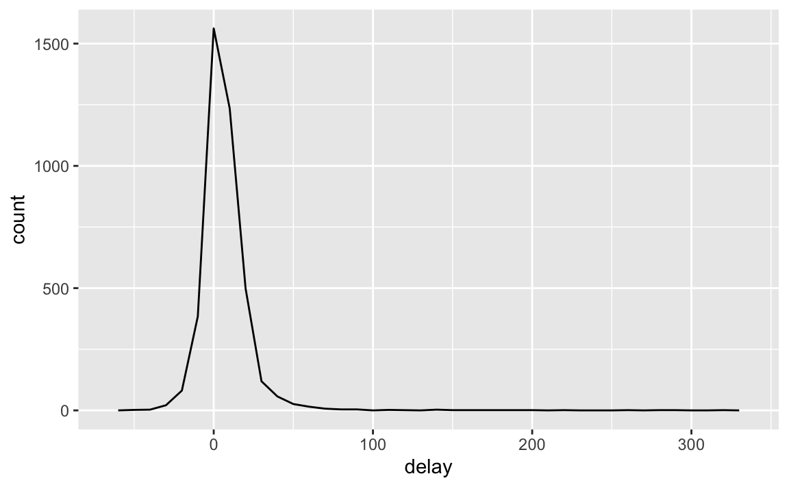

5 데이터 변형
5.1 들어가기
시각화는 직관을 얻을 수 있는 중요한 도구이다. 하지만 데이터가 정확히 필요한 형태를 취하는 경우는 거의 없다. 데이터를 좀 더 쉽게 사용할 수 있도록 새로운 변수나 요약값을 만들어야 할 수도 있고, 아니면 변수 이름을 변경하거나 관측값들을 재정렬해야 되는 경우가 종종 있다. 이 장에서 이 모든 것을 배울 것인데, dplyr 패키지와 2013년 뉴욕시 출발 항공편에 대한 새로운 데이터셋을 이용하여 데이터 변형 방법을 배울 것이다.
5.1.1 준비하기
이 장에서 우리는 tidyverse의 또 다른 핵심 구성원인 dplyr 패키지를 사용하는 법에 집중할 것이다. nycflights13 패키지의 데이터를 이용하여 핵심 아이디어를 배우고, ggplot2를 이용하여 데이터를 이해해보자.
library(nycflights13)
library(tidyverse)tidyverse 를 로드할 때 출력되는 충돌 메시지를 조심히 살펴보라. dplyr이 베이스 R 함수 몇 개를 덮어쓴다고 알려준다. dplyr 를 로딩한 후 이 함수들의 베이스 버전을 사용하고 싶다면 stats::filter() 혹은 stats::lag() 와 같이 전체 이름을 사용해야 한다.
5.1.2 nycflights13
dplyr의 기본 데이터 작업(manipulation) 동사를 탐색하기 위해 nycflights13::flights 를 사용할 것이다. 이 데이터프레임에는 뉴욕시에서 2013년에 출발한 336,776개의 모든 항공편이 포함되어 있다. 데이터의 출처는 US Bureau of Transportation Statistics이며 ?flights에 문서화되어 있다.
flights
#> # A tibble: 336,776 x 19
#> year month day dep_time sched_dep_time dep_delay arr_time
#> <int> <int> <int> <int> <int> <dbl> <int>
#> 1 2013 1 1 517 515 2 830
#> 2 2013 1 1 533 529 4 850
#> 3 2013 1 1 542 540 2 923
#> 4 2013 1 1 544 545 -1 1004
#> 5 2013 1 1 554 600 -6 812
#> 6 2013 1 1 554 558 -4 740
#> # ... with 3.368e+05 more rows, and 12 more variables:
#> # sched_arr_time <int>, arr_delay <dbl>, carrier <chr>, flight <int>,
#> # tailnum <chr>, origin <chr>, dest <chr>, air_time <dbl>,
#> # distance <dbl>, hour <dbl>, minute <dbl>, time_hour <dttm>이 데이터프레임은 이전에 사용했던 데이터프레임과 조금 다르게 출력되는 것을 알아차렸을 것이다. 즉, 처음 몇 행과 화면에 들어가는 열만 표시되었다. (데이터셋 전체를 보려면 View(flights)를 실행하여 RStudio 뷰어에서 데이터셋을 열 수 있다.) 티블(tibble)이라서 다르게 출력되었다. 티블은 데이터프레임이지만 tidyverse에서 더 잘 작동하도록 약간 조정되었다. 지금은 차이를 알 필요가 없고 데이터 길들이기 에서 티블에 대해 더 깊이 살펴볼 것이다.
열 이름 아래의 세 글자(또는 네 글자) 줄임말 행을 봤을 것이다. 이는 각 변수의 유형을 설명한다.
int는 정수를 의미한다.dbl은 더블형, 또는 실수를 의미한다.chr은 문자형 벡터, 혹은 문자열을 의미한다.dttm은 데이트-타임형(날짜 + 시간)을 의미한다.
이 데이터셋에서 사용되지 않은 세 가지 일반적인 변수 유형이 있는데 이 책 뒤에서 살펴볼 것이다.
lgl은TRUE혹은FALSE만 포함하는 벡터인 논리형을 의미한다.fctr은 팩터형을 의미하는데, R은 이를 이용하여 가능한 값이 미리 정해진 범주형 변수를 나타낸다.date는 데이트형을 의미한다.
5.1.3 dplyr 기초
이 장에서 대부분의 데이터 작업 문제를 풀 수 있는 다섯 개의 핵심 dplyr 함수들을 배울 것이다.
- 값을 기준으로 선택하라 (
filter()). - 행을 재정렬하라 (
arrange()). - 이름으로 변수를 선택하라 (
select()). - 기존 변수들의 함수로 새로운 변수를 생성하라 (
mutate()). - 많은 값을 하나의 요약값으로 합쳐라 (
summarize()).
이것들은 모두 group_by() 와 함께 사용할 수 있는데, 이는 전체 데이터셋에 동작하지 않고 그룹마다 동작하도록 각 함수의 범위를 변경한다. 이 여섯 함수가 데이터 작업 언어에서 동사가 된다.
모든 동사는 비슷하게 작동한다.
첫 인수는 데이터프레임이다.
그 이후의 인수들은 (따옴표가 없는) 변수 이름을 사용하여 데이터프레임에 무엇을 할지를 설명한다.
결과는 새로운 데이터프레임이다.
이 속성들을 함께 이용하면 여러 단순한 단계를 쉽게 연결하여 복잡한 결과를 얻을 수 있다. 이 동사들이 어떻게 작동하는지 좀 더 살펴보자.
5.2 filter() 로 필터링하기
filter() 를 이용하면 값을 기준으로 데이터를 서브셋할 수 있다. 첫 번째 인수는 데이터프레임 이름이다. 두 번째 이후의 인수들은 데이터프레임을 필터링하는 표현식들이다. 예를 들어 1월 1일 항공편 모두를 다음과 같이 선택할 수 있다.
filter(flights, month == 1, day == 1)
#> # A tibble: 842 x 19
#> year month day dep_time sched_dep_time dep_delay arr_time
#> <int> <int> <int> <int> <int> <dbl> <int>
#> 1 2013 1 1 517 515 2 830
#> 2 2013 1 1 533 529 4 850
#> 3 2013 1 1 542 540 2 923
#> 4 2013 1 1 544 545 -1 1004
#> 5 2013 1 1 554 600 -6 812
#> 6 2013 1 1 554 558 -4 740
#> # ... with 836 more rows, and 12 more variables: sched_arr_time <int>,
#> # arr_delay <dbl>, carrier <chr>, flight <int>, tailnum <chr>,
#> # origin <chr>, dest <chr>, air_time <dbl>, distance <dbl>, hour <dbl>,
#> # minute <dbl>, time_hour <dttm>해당 코드 라인을 실행하면 dplyr은 필터링 연산을 실행하고 새로운 데이터프레임을 반환한다. dplyr 함수들은 입력을 절대 수정하지 않기 때문에, 결과를 저장하려면 할당 연산자 <- 를 사용해야 한다.
jan1 <- filter(flights, month == 1, day == 1)R 은 결과를 출력하거나 변수에 저장한다. 둘 다 수행되게 하려면 할당문을 괄호로 묶으면 된다.
(dec25 <- filter(flights, month == 12, day == 25))
#> # A tibble: 719 x 19
#> year month day dep_time sched_dep_time dep_delay arr_time
#> <int> <int> <int> <int> <int> <dbl> <int>
#> 1 2013 12 25 456 500 -4 649
#> 2 2013 12 25 524 515 9 805
#> 3 2013 12 25 542 540 2 832
#> 4 2013 12 25 546 550 -4 1022
#> 5 2013 12 25 556 600 -4 730
#> 6 2013 12 25 557 600 -3 743
#> # ... with 713 more rows, and 12 more variables: sched_arr_time <int>,
#> # arr_delay <dbl>, carrier <chr>, flight <int>, tailnum <chr>,
#> # origin <chr>, dest <chr>, air_time <dbl>, distance <dbl>, hour <dbl>,
#> # minute <dbl>, time_hour <dttm>5.2.1 비교
필터링을 효과적으로 사용하려면 비교 연산자를 사용하여 원하는 관측값을 선택하는 방법을 알아야 한다. R에는 표준연산자군이 있다. >, >=, <, <=, != (같지 않음), == (같음). R을 배우기 시작할 때, 가장 범하기 쉬운 실수는, 같음을 테스트할 때 == 대신 = 를 사용하는 것이다. 이런 실수를 하면 오류가 발생하면서 해당 내용을 알려준다.
filter(flights, month = 1)
#> Error: `month` (`month = 1`) must not be named, do you need `==`?== 를 사용할 때 자주 발생하는 다른 문제는 부동소수점 숫자이다. 다음 결과들에 놀랄 것이다.
sqrt(2) ^ 2 == 2
#> [1] FALSE
1 / 49 * 49 == 1
#> [1] FALSE컴퓨터는 유한 정밀도 산술을 사용하므로 (무한대 수를 저장할 수 없는 건 당연하다) 눈 앞에 보이는 숫자는 근사값이라는 것을 기억하라. == 대신, near() 를 사용하라.
near(sqrt(2) ^ 2, 2)
#> [1] TRUE
near(1 / 49 * 49, 1)
#> [1] TRUE5.2.2 논리 연산자
filter() 의 인수들은 ‘and’로 결합된다. 즉, 모든 표현식이 참이어야 행이 출력에 포함된다. 다른 유형의 조합을 만들려면 직접 불(Boolean) 연산자를 사용해야 한다. & 는 ‘and’, | 는 ‘or’, ! 는 ‘not’이다. 다음의 그림은 불 연산자 전체 집합을 보여준다.

Figure 5.1: Complete set of boolean operations. x is the left-hand circle, y is the right-hand circle, and the shaded region show which parts each operator selects.
다음 코드는 11월이나 12월에 출발한 항공편 모두를 찾는다.
filter(flights, month == 11 | month == 12)연산 순서는 영어에서의 순서와 다르다. filter(flights, month == 11 | 12) 로 쓰면 직역으로 ‘finds all flights that departed in November or December’로 번역되겠지만 이렇게 쓰면 안 된다. 대신 11 | 12 (이 표현식은 TRUE가 됨)와 같은 달을 모두 찾는다. 수치형 문맥에서 TRUE 는 1 이 되므로 이는 11월이나 12월이 아닌 1월의 모든 항공편을 찾는다. 꽤 혼란스럽다!
이 문제에 유용한 팁은 x %in% y이다. 이는 x가 y에 있는 값 중 하나인 행을 모두 선택한다.
nov_dec <- filter(flights, month %in% c(11, 12))드 모르간 법칙을 기억에서 불러내어 복잡한 서브셋 동작을 단순화할 수도 있다. !(x & y) 는 !x | !y 와 같고 !(x | y) 는 !x & !y 와 같다. 예를 들어 (출발 혹은 도착에서) 두 시간 이상 지연되지 않은 항공편을 모두 찾고 싶다면 다음의 두 필터 중 하나를 사용해도 된다.
filter(flights, !(arr_delay > 120 | dep_delay > 120))
filter(flights, arr_delay <= 120, dep_delay <= 120)R에는 & 와 | 외에도 && 와 || 도 있다. 여기서는 사용하지 않는다! [conditional execution]에서 이들을 사용해야 할 때 배울 것이다.
filter() 안의 표현식이 복잡하고 다중으로 되기 시작하면, 항상 이들을 명시적 변수들로 만드는 것을 고려하라. 이렇게 하면 작업을 확인하기 훨씬 쉬워진다. 새 변수를 만드는 법은 곧 배울 것이다.
5.2.3 결측값
R에서 비교를 까다롭게 만드는 중요한 특징은 결측값, 즉 NA (‘not available, 이용불가’)이다. NA 는 모르는 값을 나타내므로 결측값은 ‘파급된다’. 즉, 모르는 값이 연관된 연산의 결과도 대부분 모르는 값이 된다.
NA > 5
#> [1] NA
10 == NA
#> [1] NA
NA + 10
#> [1] NA
NA / 2
#> [1] NA가장 헷갈리는 결과는 이것이다.
NA == NA
#> [1] NA문맥이 더 있으면 왜 이것이 사실인지 이해하기 쉽다.
# 메리의 나이를 x 라고 하자. 우리는 그녀가 몇 살인지 모른다.
x <- NA
# 존의 나이를 y 라고 하자. 우리는 그가 몇 살인지 모른다.
y <- NA
# 존과 메리는 같은 나이인가?
x == y
#> [1] NA
# 우린 모른다!값이 결측인지를 확인하고 싶으면 is.na() 를 사용하라.
is.na(x)
#> [1] TRUEfilter() 는 조건이 TRUE 인 열만 포함한다. FALSE 와 NA 값들은 제외한다. 결측값들을 남기려면 명시적으로 요청하라.
df <- tibble(x = c(1, NA, 3))
filter(df, x > 1)
#> # A tibble: 1 x 1
#> x
#> <dbl>
#> 1 3
filter(df, is.na(x) | x > 1)
#> # A tibble: 2 x 1
#> x
#> <dbl>
#> 1 NA
#> 2 35.2.4 연습문제
다음 조건을 만족하는 항공편을 모두 찾아라.
- 2시간 이상 도착 지연
- 휴스턴(IAH 혹은 HOU)으로 운항
- 유나이티드항공(United), 아메리칸항공(American), 델타항공(Delta)이 운항
- 여름 (7, 8, 9월)에 출발
- 2시간 이상 지연 도착했지만, 지연 출발하지는 않음
- 최소 한 시간 이상 지연됐지만 운항 중 30분 이상 단축
- 자정과 6am (포함) 사이에 출발
다른 유용한 dplyr 필터링 도우미로
between()이 있다. 어떤 일을 하는가? 이 도우미로 이전 문제들을 해결하는 데 사용한 코드들을 단순하게 할 수 있는가?dep_time이 결측인 항공편은 몇 편인가? 어떤 다른 변수들이 결측인가? 이 열들이 나타내는 것은 무엇이겠는가?NA ^ 0은 왜 결측이 아닌가?NA | TRUE는 왜 결측이 아닌가?FALSE & NA는 왜 결측이 아닌가? 일반 규칙을 발견할 수 있겠는가? (NA * 0은 까다로운 반례이다!)
5.3 arrange() 로 정렬하기
arrange() 는 행을 선택하는 것 대신, 순서를 바꾼다는 것만 제외하고는 filter() 와 유사하게 작동한다. 데이터프레임과 정렬기준으로 지정할 열 이름 집합(혹은 복잡한 표현식)을 입력으로 한다. 하나 이상의 열 이름을 제공하면 각 열은 이전 열의 동점값(tie) 상황을 해결하는 데 사용된다.
arrange(flights, year, month, day)
#> # A tibble: 336,776 x 19
#> year month day dep_time sched_dep_time dep_delay arr_time
#> <int> <int> <int> <int> <int> <dbl> <int>
#> 1 2013 1 1 517 515 2 830
#> 2 2013 1 1 533 529 4 850
#> 3 2013 1 1 542 540 2 923
#> 4 2013 1 1 544 545 -1 1004
#> 5 2013 1 1 554 600 -6 812
#> 6 2013 1 1 554 558 -4 740
#> # ... with 3.368e+05 more rows, and 12 more variables:
#> # sched_arr_time <int>, arr_delay <dbl>, carrier <chr>, flight <int>,
#> # tailnum <chr>, origin <chr>, dest <chr>, air_time <dbl>,
#> # distance <dbl>, hour <dbl>, minute <dbl>, time_hour <dttm>desc() 를 사용하여 내림차순으로 열을 재정렬하라.
arrange(flights, desc(dep_delay))
#> # A tibble: 336,776 x 19
#> year month day dep_time sched_dep_time dep_delay arr_time
#> <int> <int> <int> <int> <int> <dbl> <int>
#> 1 2013 1 9 641 900 1301 1242
#> 2 2013 6 15 1432 1935 1137 1607
#> 3 2013 1 10 1121 1635 1126 1239
#> 4 2013 9 20 1139 1845 1014 1457
#> 5 2013 7 22 845 1600 1005 1044
#> 6 2013 4 10 1100 1900 960 1342
#> # ... with 3.368e+05 more rows, and 12 more variables:
#> # sched_arr_time <int>, arr_delay <dbl>, carrier <chr>, flight <int>,
#> # tailnum <chr>, origin <chr>, dest <chr>, air_time <dbl>,
#> # distance <dbl>, hour <dbl>, minute <dbl>, time_hour <dttm>결측값은 항상 마지막에 정렬된다.
df <- tibble(x = c(5, 2, NA))
arrange(df, x)
#> # A tibble: 3 x 1
#> x
#> <dbl>
#> 1 2
#> 2 5
#> 3 NA
arrange(df, desc(x))
#> # A tibble: 3 x 1
#> x
#> <dbl>
#> 1 5
#> 2 2
#> 3 NA5.3.1 연습문제
arrange()를 사용하여 모든 결측값을 앞에 오도록 정렬하라 (힌트:is.na()를 사용하라).flights를 정렬하여 가장 지연된 항공편을 찾아라. 가장 일찍 출발한 항공편을 찾아라.flights를 정렬하여 가장 빠른 항공편을 찾아라.어떤 항공편이 가장 멀리 운항했는가? 가장 짧게 운항한 항공편은?
5.4 select() 로 열 선택하기
변수가 수백, 수천 개인 데이터셋을 심심치 않게 만날 것이다. 이 경우 첫 과제는 실제로 관심 있는 변수들로 좁히는 것이다. select() 와 변수 이름에 기반한 연산들을 이용하면 유용한 서브셋으로 신속하게 줌 인 해 볼 수 있다.
변수가 19 개 밖에 없는 항공편 데이터에서는 select() 가 엄청나게 유용하지는 않지만 일반적인 개념을 볼 수는 있다.
# Select columns by name
select(flights, year, month, day)
#> # A tibble: 336,776 x 3
#> year month day
#> <int> <int> <int>
#> 1 2013 1 1
#> 2 2013 1 1
#> 3 2013 1 1
#> 4 2013 1 1
#> 5 2013 1 1
#> 6 2013 1 1
#> # ... with 3.368e+05 more rows
# Select all columns between year and day (inclusive)
select(flights, year:day)
#> # A tibble: 336,776 x 3
#> year month day
#> <int> <int> <int>
#> 1 2013 1 1
#> 2 2013 1 1
#> 3 2013 1 1
#> 4 2013 1 1
#> 5 2013 1 1
#> 6 2013 1 1
#> # ... with 3.368e+05 more rows
# Select all columns except those from year to day (inclusive)
select(flights, -(year:day))
#> # A tibble: 336,776 x 16
#> dep_time sched_dep_time dep_delay arr_time sched_arr_time arr_delay
#> <int> <int> <dbl> <int> <int> <dbl>
#> 1 517 515 2 830 819 11
#> 2 533 529 4 850 830 20
#> 3 542 540 2 923 850 33
#> 4 544 545 -1 1004 1022 -18
#> 5 554 600 -6 812 837 -25
#> 6 554 558 -4 740 728 12
#> # ... with 3.368e+05 more rows, and 10 more variables: carrier <chr>,
#> # flight <int>, tailnum <chr>, origin <chr>, dest <chr>, air_time <dbl>,
#> # distance <dbl>, hour <dbl>, minute <dbl>, time_hour <dttm>select() 안에서 사용할 수 있는 도우미 함수들이 많다.
starts_with("abc"): ‘abc’로 시작하는 이름에 매칭ends_with("xyz"): ‘xyz’로 끝나는 이름에 매칭contains("ijk"): ‘ijk’를 포함하는 이름에 매칭matches("(.)\\1"): 정규표현식에 매칭되는 변수들을 선택. 이 표현식은 반복되는 문자를 포함하는 변수에 매칭된다. 11장에서 정규표현식에 대해 더 배울 것이다.num_range(“x”, 1:3): x1, x2, x3에 매칭
자세한 내용은 ?select를 보자.
변수명 변경에 select() 를 이용할 수 있지만, 명시적으로 언급하지 않은 모든 변수를 누락하기 때문에 유용하지 않다. 대신 select() 의 변형인 rename() 을 사용하면 명시적으로 언급하지 않은 모든 변수를 유지한다.
rename(flights, tail_num = tailnum)
#> # A tibble: 336,776 x 19
#> year month day dep_time sched_dep_time dep_delay arr_time
#> <int> <int> <int> <int> <int> <dbl> <int>
#> 1 2013 1 1 517 515 2 830
#> 2 2013 1 1 533 529 4 850
#> 3 2013 1 1 542 540 2 923
#> 4 2013 1 1 544 545 -1 1004
#> 5 2013 1 1 554 600 -6 812
#> 6 2013 1 1 554 558 -4 740
#> # ... with 3.368e+05 more rows, and 12 more variables:
#> # sched_arr_time <int>, arr_delay <dbl>, carrier <chr>, flight <int>,
#> # tail_num <chr>, origin <chr>, dest <chr>, air_time <dbl>,
#> # distance <dbl>, hour <dbl>, minute <dbl>, time_hour <dttm>다른 방법은 select() 를 도우미 함수인 everything() 과 함께 사용하는 것이다. 데이터프레임의 시작 부분으로 옮기고 싶은 변수들이 몇 개 있을 때 유용하다.
select(flights, time_hour, air_time, everything())
#> # A tibble: 336,776 x 19
#> time_hour air_time year month day dep_time sched_dep_time
#> <dttm> <dbl> <int> <int> <int> <int> <int>
#> 1 2013-01-01 05:00:00 227 2013 1 1 517 515
#> 2 2013-01-01 05:00:00 227 2013 1 1 533 529
#> 3 2013-01-01 05:00:00 160 2013 1 1 542 540
#> 4 2013-01-01 05:00:00 183 2013 1 1 544 545
#> 5 2013-01-01 06:00:00 116 2013 1 1 554 600
#> 6 2013-01-01 05:00:00 150 2013 1 1 554 558
#> # ... with 3.368e+05 more rows, and 12 more variables: dep_delay <dbl>,
#> # arr_time <int>, sched_arr_time <int>, arr_delay <dbl>, carrier <chr>,
#> # flight <int>, tailnum <chr>, origin <chr>, dest <chr>, distance <dbl>,
#> # hour <dbl>, minute <dbl>5.4.1 연습문제
flights에서dep_time, dep_delay, arr_time, arr_delay를 선택할 수 있는, 가능한 모든 방법들에 대해 브레인스토밍 하라.select()호출에서 한 변수 이름을 여러 번 포함하면 어떻게 되는가?one_of()함수는 어떤 일을 하는가? 다음의 벡터와 함께 사용하면 도움이 되는 이유는 무엇인가?vars <- c("year", "month", "day", "dep_delay", "arr_delay")다음 코드의 실행 결과를 예상했는가? 선택 도우미(select helpers)는 기본적으로 이 경우를 어떻게 다루는가? 이 기본값 설정을 어떻게 바꾸겠는가?
select(flights, contains("TIME"))
5.5 mutate() 로 새로운 변수 추가하기
기존 열 집합을 선택하는 것 외에도 기존 열들의 함수인 새로운 열을 추가하는 것이 유용한 경우가 많다. mutate() 가 바로 이 일을 한다.
mutate() 는 새로운 열을 항상 데이터셋 마지막에 추가하기 때문에, 새로운 변수를 보기 편하게 우선 더 좁은 데이터셋을 생성해 보자. RStudio에서 모든 열을 볼 수 있는 가장 쉬운 방법은 <코드체 >View()` 라는 것을 기억하자.
flights_sml <- select(flights,
year:day,
ends_with("delay"),
distance,
air_time
)
mutate(flights_sml,
gain = dep_delay - arr_delay,
speed = distance / air_time * 60
)
#> # A tibble: 336,776 x 9
#> year month day dep_delay arr_delay distance air_time gain speed
#> <int> <int> <int> <dbl> <dbl> <dbl> <dbl> <dbl> <dbl>
#> 1 2013 1 1 2 11 1400 227 -9 370.
#> 2 2013 1 1 4 20 1416 227 -16 374.
#> 3 2013 1 1 2 33 1089 160 -31 408.
#> 4 2013 1 1 -1 -18 1576 183 17 517.
#> 5 2013 1 1 -6 -25 762 116 19 394.
#> 6 2013 1 1 -4 12 719 150 -16 288.
#> # ... with 3.368e+05 more rows방금 생성한 열을 참조할 수 있다는 것을 주목하라.
mutate(flights_sml,
gain = dep_delay - arr_delay,
hours = air_time / 60,
gain_per_hour = gain / hours
)
#> # A tibble: 336,776 x 10
#> year month day dep_delay arr_delay distance air_time gain hours
#> <int> <int> <int> <dbl> <dbl> <dbl> <dbl> <dbl> <dbl>
#> 1 2013 1 1 2 11 1400 227 -9 3.78
#> 2 2013 1 1 4 20 1416 227 -16 3.78
#> 3 2013 1 1 2 33 1089 160 -31 2.67
#> 4 2013 1 1 -1 -18 1576 183 17 3.05
#> 5 2013 1 1 -6 -25 762 116 19 1.93
#> 6 2013 1 1 -4 12 719 150 -16 2.5
#> # ... with 3.368e+05 more rows, and 1 more variable: gain_per_hour <dbl>새 변수만을 남기고 싶다면 transmute() 을 사용하라.
transmute(flights,
gain = dep_delay - arr_delay,
hours = air_time / 60,
gain_per_hour = gain / hours
)
#> # A tibble: 336,776 x 3
#> gain hours gain_per_hour
#> <dbl> <dbl> <dbl>
#> 1 -9 3.78 -2.38
#> 2 -16 3.78 -4.23
#> 3 -31 2.67 -11.6
#> 4 17 3.05 5.57
#> 5 19 1.93 9.83
#> 6 -16 2.5 -6.4
#> # ... with 3.368e+05 more rows5.5.1 유용한 생성 함수
mutate() 과 사용할 수 있는 변수 생성 함수가 많다. 핵심 속성은 이 함수들이 벡터화되어야 한다는 것이다. 즉, 값의 벡터를 입력으로 하여 같은 개수의 값을 가진 벡터를 출력해야 한다. 사용할 수 있는 함수를 모두 나열할 방법은 없지만 다음은 자주 사용되는 함수 모음이다.
산술 연산자
+, -, *, /, ^소위 ’재활용 규칙’을 이용하여 이들은 모두 벡터화된다. 한 파라미터가 다른 것보다 짧으면 같은 길이로 자동 연장된다. 인수 하나가 단일 숫자인 경우에 가장 유용하다.air_time / 60, hours * 60 + minute등.산술 연산자는 또한 나중에 배우게 될 집계 함수(aggregate function)와 함께 사용할 때 유용하다. 예를 들어
x / sum(x)는 전체 비율을 계산하고,y - mean(y)는 평균으로부터 차이를 계산한다.모듈러 연산
%/%,%%%/%(정수 나누기),%%(나머지), 여기서x == y * (x %/% y) + (x %% y)이다. 모듈러 연산은 정수를 조각으로 분해할 수 있기 때문에 편리한 도구이다. 예를 들어flights데이터셋의dep_time으로부터hour와minute을 다음과 같이 계산할 수 있다.transmute(flights, dep_time, hour = dep_time %/% 100, minute = dep_time %% 100 ) #> # A tibble: 336,776 x 3 #> dep_time hour minute #> <int> <dbl> <dbl> #> 1 517 5 17 #> 2 533 5 33 #> 3 542 5 42 #> 4 544 5 44 #> 5 554 5 54 #> 6 554 5 54 #> # ... with 3.368e+05 more rows로그
log(), log2(), log10(). 로그는 여러 차수를 넘나드는 데이터를 처리하는 데 매우 유용한 변환이다. 곱하기(multiplicative) 관계를 더하기(additive) 관계로도 변환하는데, 이는 [modeling]에서 다시 살펴볼 것이다.다른 조건이 같다면 나는
log2()를 사용할 것을 추천하는데 해석이 다음과 같이 쉽기 때문이다. 로그 스케일에서 1 차이는 원 스케일에서 두 배에 해당하고 -1 차이는 절반에 해당한다.오프셋
lead()와lag()를 사용하면 값을 당기거나(leading) 미는(laging) 것을 참조할 수 있다. 또 연속된 차이값(running differences)을 계산하거나 (예:x - lag(x)) 값들이 변경된 곳을 찾는 데(x != lag(x)) 사용할 수 있다.group_by()와 함께 사용할 때 가장 유용한데, 곧 배울 것이다.(x <- 1:10) #> [1] 1 2 3 4 5 6 7 8 9 10 lag(x) #> [1] NA 1 2 3 4 5 6 7 8 9 lead(x) #> [1] 2 3 4 5 6 7 8 9 10 NA누적 및 롤링 집계 R에는 연속하는(running) 합계, 곱셈, 최소값, 최대값 함수
cumsum(), cumprod(), cummin(), cummax()가 있다. dplyr 에는 누적평균을 구하는cummean()이 있다. 연속하는(rolling) 집계가 필요하면 RcppRoll 패키지를 사용해보라.x #> [1] 1 2 3 4 5 6 7 8 9 10 cumsum(x) #> [1] 1 3 6 10 15 21 28 36 45 55 cummean(x) #> [1] 1.0 1.5 2.0 2.5 3.0 3.5 4.0 4.5 5.0 5.5논리형 비교 연산자
<, <=, >, >=, !=이에 대해선 앞에서 배웠다. 복잡한 일련의 논리형 연산을 수행한다면 새 변수에 중간 값들을 저장하여 각 단계가 예상대로 작동하는지 확인하는 것이 좋다.랭킹 랭킹 함수들은 많지만,
min_rank()부터 시작해야 한다. 가장 평범한 유형의 랭킹을 수행한다 (예: 첫 번째, 두 번째, 세 번째, 네 번째). 기본값에선 가장 작은 값이 가장 낮은 순서가 된다. 가장 큰 값을 가장 낮은 순서로 만들려면desc(x)를 사용하라.y <- c(1, 2, 2, NA, 3, 4) min_rank(y) #> [1] 1 2 2 NA 4 5 min_rank(desc(y)) #> [1] 5 3 3 NA 2 1min_rank()를 사용하여 원하는 작업을 해결하지 못했다면 변형 함수row_number(), dense_rank(), percent_rank(), cume_dist(), ntile()를 살펴보라. 자세한 내용을 보려면 해당 도움말 페이지를 보자.row_number(y) #> [1] 1 2 3 NA 4 5 dense_rank(y) #> [1] 1 2 2 NA 3 4 percent_rank(y) #> [1] 0.00 0.25 0.25 NA 0.75 1.00 cume_dist(y) #> [1] 0.2 0.6 0.6 NA 0.8 1.0
5.5.2 연습문제
현재
dep_time과sched_dep_time은 보기 편하지만 실제 연속형 숫자가 아니기 때문에 이들을 가지고 계산하기는 쉽지 않다. 이들을 편리한 표현식인 자정 이후 분으로 변환하라.air_time와arr_time - dep_time을 비교하라. 무엇이 나올까? 무엇이 나왔는가? 문제를 해결하기 위해 어떻게 해야 하는가?dep_time, sched_dep_time, dep_delay를 비교하라. 이 세 숫자가 어떻게 연결되었겠는가?랭킹 함수를 사용하여 가장 지연된 10개의 항공편을 찾아라. 동점을 어떻게 하고 싶은가?
min_rank()의 설명서를 주의 깊게 읽어라.1:3 + 1:10은 무엇을 반환하는가? 이유는?R에는 어떤 삼각함수들이 있는가?
5.6 summarize() 로 그룹화 요약하기
마지막 핵심 동사는 summarize() 이다. 이는 데이터프레임을 하나의 행으로 축약한다.
summarize(flights, delay = mean(dep_delay, na.rm = TRUE))
#> # A tibble: 1 x 1
#> delay
#> <dbl>
#> 1 12.6(na.rm = TRUE 의 의미는 곧바로 살펴볼 것이다.)
summarize() 는 group_by() 와 함께 사용하지 않으면 별로 유용하지 않다. group_by() 는 분석의 단위를 전체 데이터셋에서 개별 그룹으로 변경시킨다. 이후 dplyr 동사를 그룹화된 데이터프레임에 사용하면 이 동사가 ’그룹마다(by group)’ 적용된다. 예를 들어 날짜로 그룹화된 데이터프레임에 정확히 같은 코드를 적용하면 날짜별 평균 지연 시간이 나온다.
by_day <- group_by(flights, year, month, day)
summarize(by_day, delay = mean(dep_delay, na.rm = TRUE))
#> # A tibble: 365 x 4
#> # Groups: year, month [?]
#> year month day delay
#> <int> <int> <int> <dbl>
#> 1 2013 1 1 11.5
#> 2 2013 1 2 13.9
#> 3 2013 1 3 11.0
#> 4 2013 1 4 8.95
#> 5 2013 1 5 5.73
#> 6 2013 1 6 7.15
#> # ... with 359 more rowsgroup_by() 와 summarize() 를 조합하면 dplyr 로 작업할 때 가장 빈번히 사용할 도구들 중 하나가 되는데, 바로 그룹화된 요약이 된다. 그런데 이에 대해 더 살펴보기 전에 강력한 새로운 개념인 파이프를 알아보아야 한다.
5.6.1 파이프로 여러 작업 조합하기
각 위치에 대해 거리와 평균 지연 사이에 관계를 탐색하고 싶다고 해보자. dplyr 에 대해 배운 것들을 사용하면 다음과 같이 코드를 작성할 것이다.
by_dest <- group_by(flights, dest)
delay <- summarize(by_dest,
count = n(),
dist = mean(distance, na.rm = TRUE),
delay = mean(arr_delay, na.rm = TRUE)
)
delay <- filter(delay, count > 20, dest != "HNL")
# 지연 시간은 거리에 따라 ~750 마일까지는 증가하다가 감소하는 것 같다.
# 항로가 길수록 비행 중에 지연 시간을 만회할 여력이 더 있는 것인가?
ggplot(data = delay, mapping = aes(x = dist, y = delay)) +
geom_point(aes(size = count), alpha = 1/3) +
geom_smooth(se = FALSE)
#> `geom_smooth()` using method = 'loess' and formula 'y ~ x'
세 단계로 이 데이터를 전처리한다.
목적지별로 항공편을 그룹화.
거리, 평균 지연 시간, 항공편 수를 계산하여 요약.
잡음이 많은 포인트와 호놀룰루 공항(다음으로 먼 공항보다 거의 두 배가 먼 공항)을 제거하는 필터링.
이 코드는 작성하기 조금 내키지 않는데, 크게 상관없는 중간 데이터프레임들에 이름을 모두 지어 주어야 하기 때문이다. 이름 짓는 것은 쉽지 않아서 분석 속도를 늦춘다.
이 문제를 파이프, %>% 로 해결하는 방법이 있다.
delays <- flights %>%
group_by(dest) %>%
summarize(
count = n(),
dist = mean(distance, na.rm = TRUE),
delay = mean(arr_delay, na.rm = TRUE)
) %>%
filter(count > 20, dest != "HNL")이 방법은 변환되는 것이 아닌 변환 자체에 초점을 맞춰서, 코드를 더 읽기 쉽게 만든다. 다음과 같이 연속된 명령문으로 읽을 수 있다. 그룹화하고, 그 다음 요약하고, 그 다음 필터링하라. 여기에서 제안된 것처럼 코드를 읽을 때 %>% 를 ’그리고 나서 (then)’로 읽는 것이 좋다.
기저에서는 x %>% f(y) 는 f(x, y) 로 바뀌고, x %>% f(y) %>% g(z) 는 g(f(x, y), z) 로 바뀐다. 파이프를 사용하여 다중 작업을 좌-에서-우, 위-에서-아래로 읽을 수 있게 다시 쓸 수 있다. 파이프를 사용하면 코드 가독성이 현격하게 좋아지므로 지금부터는 파이프를 자주 사용할 것이다. 파이프의 세부 사항에 대해서는 나중에 다시 살펴볼 것이다.
파이프로 작업하는 것은 tidyverse 에 속하기 위한 핵심 기준 중 하나이다. 유일한 예외는 ggplot2 인데 이는 파이프가 발견되기 전에 작성되었다. ggplot2 의 다음 버전이며 파이프를 사용하는 ggvis 도 안타깝게도 무대에 나오기에는 아직 준비가 되지 않았다.
5.6.2 결측값
위에서 우리가 사용한 na.rm 인수에 대해 궁금해 했을 것이다. 이를 설정하지 않았다면 어떻게 되었을까?
flights %>%
group_by(year, month, day) %>%
summarize(mean = mean(dep_delay))
#> # A tibble: 365 x 4
#> # Groups: year, month [?]
#> year month day mean
#> <int> <int> <int> <dbl>
#> 1 2013 1 1 NA
#> 2 2013 1 2 NA
#> 3 2013 1 3 NA
#> 4 2013 1 4 NA
#> 5 2013 1 5 NA
#> 6 2013 1 6 NA
#> # ... with 359 more rows결측값이 많이 생겼다. 집계 함수는 결측값에 관한 일반적인 법칙을 따르기 때문 (즉, 입력에 결측값이 있으면 출력도 결측값이 된다) 이다. 다행스럽게도, 모든 집계 함수에는 na.rm 인수가 있어서 계산 전에 결측값들을 제거할 수 있다.
flights %>%
group_by(year, month, day) %>%
summarize(mean = mean(dep_delay, na.rm = TRUE))
#> # A tibble: 365 x 4
#> # Groups: year, month [?]
#> year month day mean
#> <int> <int> <int> <dbl>
#> 1 2013 1 1 11.5
#> 2 2013 1 2 13.9
#> 3 2013 1 3 11.0
#> 4 2013 1 4 8.95
#> 5 2013 1 5 5.73
#> 6 2013 1 6 7.15
#> # ... with 359 more rows이 경우에서 결측값은 취소된 항공편을 나타내므로, 취소된 항공편을 제거해서 문제를 해결할 수 있다. 이 데이터셋을 저장하여 다음 몇 가지 예제에서 재사용할 것이다.
not_cancelled <- flights %>%
filter(!is.na(dep_delay), !is.na(arr_delay))
not_cancelled %>%
group_by(year, month, day) %>%
summarize(mean = mean(dep_delay))
#> # A tibble: 365 x 4
#> # Groups: year, month [?]
#> year month day mean
#> <int> <int> <int> <dbl>
#> 1 2013 1 1 11.4
#> 2 2013 1 2 13.7
#> 3 2013 1 3 10.9
#> 4 2013 1 4 8.97
#> 5 2013 1 5 5.73
#> 6 2013 1 6 7.15
#> # ... with 359 more rows5.6.3 카운트
집계를 수행할 때마다, 카운트 (n() ) 혹은, 결측이 아닌 값의 카운트 (sum(!is.na(x)))를 포함하는 것이 좋다. 이렇게 하면 매우 적은 양의 데이터를 기반으로 결론을 도출하지 않는지 확인할 수 있다. 예를 들어 평균 지연 시간이 가장 긴 항공기(꼬리 번호로 식별)를 보자.
delays <- not_cancelled %>%
group_by(tailnum) %>%
summarize(
delay = mean(arr_delay)
)
ggplot(data = delays, mapping = aes(x = delay)) +
geom_freqpoly(binwidth = 10)
우와, 어떤 항공기들은 평균 5시간(300분)이 지연되었다!
이 이야기는 사실 조금 더 미묘한 문제이다. 비행 횟수 대 평균 지연 시간의 산점도를 그리면 더 많은 통찰력을 얻을 수 있다.
delays <- not_cancelled %>%
group_by(tailnum) %>%
summarize(
delay = mean(arr_delay, na.rm = TRUE),
n = n()
)
ggplot(data = delays, mapping = aes(x = n, y = delay)) +
geom_point(alpha = 1/10)
당연히 비행이 적을 때 평균 지연 시간에 변동이 훨씬 더 크다. 이 플롯의 모양은 매우 특징적이다. 평균(혹은 다른 요약값) 대 그룹 크기의 플롯을 그리면 표본 크기가 커짐에 따라 변동이 줄어드는 것을 볼 수 있다.
이런 종류의 플롯을 살펴볼 때는, 관측값 개수가 가장 적은 그룹을 필터링하는 것이 좋은 경우가 많다. 심한 변동이 아닌 패턴을 더 볼 수 있기 때문이다. 이를 수행하는 다음 코드는 ggplot2 를 dplyr 플로에 통합하는 편리한 패턴도 보여준다. %>% 에서 + 로 전환해야 한다는 것은 조금 고통스러운 일이지만, 일단 요령을 터득하면 꽤 편리하다.
delays %>%
filter(n > 25) %>%
ggplot(mapping = aes(x = n, y = delay)) +
geom_point(alpha = 1/10)
RStudio 팁: 유용한 키보드 단축키는 Cmd/Ctrl + Shift + P이다. 이 단축키는 이전에 보낸 청크를 편집기에서 콘솔로 다시 보낸다. 이는 (예를 들어) 위의 예에서 n 값을 탐색할 때 매우 편리하다. Cmd/Ctrl + Enter로 전체 블록을 한 번 보내고, n 값을 수정한 후 Cmd/Ctrl + Shift + P을 눌러 전체 블록을 다시 보낼 수 있다.
이 유형의 패턴에는 또 다른 변형이 있다. 야구에서 타자의 평균 능력치가 타석 수와 어떻게 관련되었는지 살펴보자. 여기에서 Lahman 패키지 데이터를 사용하여 메이저리그의 모든 야구 선수의 타율 (안타수/유효타석수)을 계산한다.
타자의 기술(타율, ba 로 측정)을 안타 기회 횟수에 대해 플롯하면 두 가지 패턴이 보인다.
위에서와 같이 집계값의 변동량은 데이터 포인트가 많아짐에 따라 감소한다.
기술 수준(
ba)과 볼을 칠 기회(ab) 사이에 양의 상관관계가 있다. 팀이 누구를 타석에 내보낼지 선택할 때 당연히 최고의 선수를 선택할 것이기 때문이다.
# 보기 좋게 화면출력되도록 티블로 변환
batting <- as_tibble(Lahman::Batting)
batters <- batting %>%
group_by(playerID) %>%
summarize(
ba = sum(H, na.rm = TRUE) / sum(AB, na.rm = TRUE),
ab = sum(AB, na.rm = TRUE)
)
batters %>%
filter(ab > 100) %>%
ggplot(mapping = aes(x = ab, y = ba)) +
geom_point() +
geom_smooth(se = FALSE)
#> `geom_smooth()` using method = 'gam' and formula 'y ~ s(x, bs = "cs")'
이 사실은 순위에 중요한 영향을 준다. 단순히 desc(ba) 로 정렬하면 평균 타율이 가장 높은 선수는 능력치가 좋은 것이 아니라 단순히 운이 좋은 선수들이다.
batters %>%
arrange(desc(ba))
#> # A tibble: 18,915 x 3
#> playerID ba ab
#> <chr> <dbl> <int>
#> 1 abramge01 1 1
#> 2 banisje01 1 1
#> 3 bartocl01 1 1
#> 4 bassdo01 1 1
#> 5 berrijo01 1 1
#> 6 birasst01 1 2
#> # ... with 1.891e+04 more rows이 문제에 자세한 설명은 http://bit.ly/Bayesbbal 과 http://bit.ly/notsortavg 에서 확인할 수 있다
5.6.4 유용한 요약 함수
mean, count, sum을 사용하면 많은 이점을 얻을 수 있지만, R에는 다른 유용한 요약 함수들이 많다.
위치 측정값: 앞서
mean(x)를 사용했지만,median(x)도 유용하다. 평균(mean)은 총합 나누기 길이이고 중앙값(median)은x의 50%가 위에 위치하고, 50%는 아래에 위치하게 되는 값이다.집계와 논리형 서브셋을 조합하는 것이 유용할 때가 있다. 이러한 종류의 서브셋하기를 아직 우리가 다루지는 않았지만, [subsetting] 에서 더 배울 것이다.
not_cancelled %>% group_by(year, month, day) %>% summarize( avg_delay1 = mean(arr_delay), avg_delay2 = mean(arr_delay[arr_delay > 0]) # the average positive delay ) #> # A tibble: 365 x 5 #> # Groups: year, month [?] #> year month day avg_delay1 avg_delay2 #> <int> <int> <int> <dbl> <dbl> #> 1 2013 1 1 12.7 32.5 #> 2 2013 1 2 12.7 32.0 #> 3 2013 1 3 5.73 27.7 #> 4 2013 1 4 -1.93 28.3 #> 5 2013 1 5 -1.53 22.6 #> 6 2013 1 6 4.24 24.4 #> # ... with 359 more rows산포 측정값:
sd(x), IQR(x), mad(x). 평균제곱편차, 다른 말로는 표준 편차(standard deviation, sd)는 산포의 표준 측정값이다. 사분위범위(interquantile range),IQR()과 중위절대편차(median absolute deviation),mad(x)는 이상값이 있을 때 더 유용할 수 있는 로버스트 대체값들이다.# Why is distance to some destinations more variable than to others? not_cancelled %>% group_by(dest) %>% summarize(distance_sd = sd(distance)) %>% arrange(desc(distance_sd)) #> # A tibble: 104 x 2 #> dest distance_sd #> <chr> <dbl> #> 1 EGE 10.5 #> 2 SAN 10.4 #> 3 SFO 10.2 #> 4 HNL 10.0 #> 5 SEA 9.98 #> 6 LAS 9.91 #> # ... with 98 more rows순위 측정값:
min(x), quntile(x, 0.25), max(x). 분위수는 중앙값의 일반화이다. 예를 들어quantile(x, 0.25)는 25%`보다는 크고, 나머지 75%보다는 작은 값을 찾는다.# When do the first and last flights leave each day? not_cancelled %>% group_by(year, month, day) %>% summarize( first = min(dep_time), last = max(dep_time) ) #> # A tibble: 365 x 5 #> # Groups: year, month [?] #> year month day first last #> <int> <int> <int> <dbl> <dbl> #> 1 2013 1 1 517 2356 #> 2 2013 1 2 42 2354 #> 3 2013 1 3 32 2349 #> 4 2013 1 4 25 2358 #> 5 2013 1 5 14 2357 #> 6 2013 1 6 16 2355 #> # ... with 359 more rows자리(position) 측정값:
first(x), nth(x, 2), last(x).x[1], x[2], x[length(x)]와 유사하게 동작하지만 자리가 존재하지 않을 때(예를 들어 두 개의 요소만 있는 그룹에서 세 번째 요소를 접근하려고 할 때) 기본값을 설정할 수 있다. 예를 들어 각 날짜에 처음과 마지막 출발을 찾을 수 있다.not_cancelled %>% group_by(year, month, day) %>% summarize( first_dep = first(dep_time), last_dep = last(dep_time) ) #> # A tibble: 365 x 5 #> # Groups: year, month [?] #> year month day first_dep last_dep #> <int> <int> <int> <int> <int> #> 1 2013 1 1 517 2356 #> 2 2013 1 2 42 2354 #> 3 2013 1 3 32 2349 #> 4 2013 1 4 25 2358 #> 5 2013 1 5 14 2357 #> 6 2013 1 6 16 2355 #> # ... with 359 more rows이 함수들은 순위로 필터링하는 것을 보완한다. 필터링하면 모든 변수를 얻을 수 있는데, 각 관측값을 별도의 행으로 얻을 수 있다.
not_cancelled %>% group_by(year, month, day) %>% mutate(r = min_rank(desc(dep_time))) %>% filter(r %in% range(r)) #> # A tibble: 770 x 20 #> # Groups: year, month, day [365] #> year month day dep_time sched_dep_time dep_delay arr_time #> <int> <int> <int> <int> <int> <dbl> <int> #> 1 2013 1 1 517 515 2 830 #> 2 2013 1 1 2356 2359 -3 425 #> 3 2013 1 2 42 2359 43 518 #> 4 2013 1 2 2354 2359 -5 413 #> 5 2013 1 3 32 2359 33 504 #> 6 2013 1 3 2349 2359 -10 434 #> # ... with 764 more rows, and 13 more variables: sched_arr_time <int>, #> # arr_delay <dbl>, carrier <chr>, flight <int>, tailnum <chr>, #> # origin <chr>, dest <chr>, air_time <dbl>, distance <dbl>, hour <dbl>, #> # minute <dbl>, time_hour <dttm>, r <int>카운트: 인수가 없고 현재 그룹의 크기를 반환하는
n()을 이미 보았다. 결측이 아닌 값의 수를 카운트하려면sum(!is.na(x))를 사용하라. 유일값 개수를 카운트하려면n_distinct(x)를 사용하라.# Which destinations have the most carriers? not_cancelled %>% group_by(dest) %>% summarize(carriers = n_distinct(carrier)) %>% arrange(desc(carriers)) #> # A tibble: 104 x 2 #> dest carriers #> <chr> <int> #> 1 ATL 7 #> 2 BOS 7 #> 3 CLT 7 #> 4 ORD 7 #> 5 TPA 7 #> 6 AUS 6 #> # ... with 98 more rows카운트는 유용하기 때문에 dplyr 에는 단순히 카운트만 원할 경우 사용할 수 있는 단순한 도우미함수가 있다.
not_cancelled %>% count(dest) #> # A tibble: 104 x 2 #> dest n #> <chr> <int> #> 1 ABQ 254 #> 2 ACK 264 #> 3 ALB 418 #> 4 ANC 8 #> 5 ATL 16837 #> 6 AUS 2411 #> # ... with 98 more rows가중치 변수를 선택적으로 지정할 수 있다. 예를 들어 이를 사용하여 항공기가 비행한 마일 수를 ’카운트‘(합)할 수 있다.
not_cancelled %>% count(tailnum, wt = distance) #> # A tibble: 4,037 x 2 #> tailnum n #> <chr> <dbl> #> 1 D942DN 3418 #> 2 N0EGMQ 239143 #> 3 N10156 109664 #> 4 N102UW 25722 #> 5 N103US 24619 #> 6 N104UW 24616 #> # ... with 4,031 more rows논리형 값의 카운트와 비율:
sum(x > 10), mean(y == 0). 수치형 함수와 사용할 경우TRUE는 1로FALSE는 0으로 바뀐다. 이렇게 되면sum()과mean()가 매우 유용해진다.sum(x)는TRUE의 개수를,mean(x)는 비율을 제공한다.# How many flights left before 5am? (these usually indicate delayed # flights from the previous day) not_cancelled %>% group_by(year, month, day) %>% summarize(n_early = sum(dep_time < 500)) #> # A tibble: 365 x 4 #> # Groups: year, month [?] #> year month day n_early #> <int> <int> <int> <int> #> 1 2013 1 1 0 #> 2 2013 1 2 3 #> 3 2013 1 3 4 #> 4 2013 1 4 3 #> 5 2013 1 5 3 #> 6 2013 1 6 2 #> # ... with 359 more rows # What proportion of flights are delayed by more than an hour? not_cancelled %>% group_by(year, month, day) %>% summarize(hour_perc = mean(arr_delay > 60)) #> # A tibble: 365 x 4 #> # Groups: year, month [?] #> year month day hour_perc #> <int> <int> <int> <dbl> #> 1 2013 1 1 0.0722 #> 2 2013 1 2 0.0851 #> 3 2013 1 3 0.0567 #> 4 2013 1 4 0.0396 #> 5 2013 1 5 0.0349 #> 6 2013 1 6 0.0470 #> # ... with 359 more rows
5.6.5 다중 변수로 그룹화
여러 변수로 그룹화하면 각 요약값은 그룹화의 한 수준씩 벗겨낸다. 이를 이용하면 데이터셋을 점진적으로 쉽게 요약할 수 있다.
daily <- group_by(flights, year, month, day)
(per_day <- summarize(daily, flights = n()))
#> # A tibble: 365 x 4
#> # Groups: year, month [?]
#> year month day flights
#> <int> <int> <int> <int>
#> 1 2013 1 1 842
#> 2 2013 1 2 943
#> 3 2013 1 3 914
#> 4 2013 1 4 915
#> 5 2013 1 5 720
#> 6 2013 1 6 832
#> # ... with 359 more rows
(per_month <- summarize(per_day, flights = sum(flights)))
#> # A tibble: 12 x 3
#> # Groups: year [?]
#> year month flights
#> <int> <int> <int>
#> 1 2013 1 27004
#> 2 2013 2 24951
#> 3 2013 3 28834
#> 4 2013 4 28330
#> 5 2013 5 28796
#> 6 2013 6 28243
#> # ... with 6 more rows
(per_year <- summarize(per_month, flights = sum(flights)))
#> # A tibble: 1 x 2
#> year flights
#> <int> <int>
#> 1 2013 336776점진적으로 요약할 때 조심해야 한다. 합계와 카운트는 괜찮지만 가중평균과 가중분산에 대해서는 한번 생각해보아야 한다. 중앙값 같은 순위기반 통계량에 대해 정확히 점진적으로 요약하는 것은 가능하지 않다. 쉬운 예를 들면 그룹별 합계의 합계는 전체 합계이지만 그룹별 중앙값의 중앙값은 전체 중앙값이 아니다.
5.6.6 그룹화 해제
그룹화를 제거하고 그룹화되지 않은 데이터 작업으로 돌아가려면 ungroup() 을 사용하라.
daily %>%
ungroup() %>% # no longer grouped by date
summarize(flights = n()) # all flights
#> # A tibble: 1 x 1
#> flights
#> <int>
#> 1 3367765.6.7 연습문제
한 그룹의 항공편의 일반적인 지연 특성들을 평가하는 방법 최소 5개를 브레인스토밍 하라. 다음의 시나리오를 고려하라.
항공편은 50% 경우 15분 단축, 50% 경우 15분 늦는다.
항공편은 항상 10분 늦는다.
항공편은 50% 경우 30 분 단축, 50% 경우 30 분 늦는다.
99% 경우 항공편은 정시 도착한다. 1% 경우 2시간 늦는다.
다음 중 무엇이 더 중요한가, 지연 도착 혹은 지연 출발?
not_canceled %>% count(dest)와not_cancelled %>% count(tailnum, wt = distance)와 같은 출력을 주는 다른 접근법(count()를 사용하지 않고)을 생각해보라.취소된 항공편에 대한 우리의 정의(
is.na(dep_delay) | is.na(arr_delay))는 최선은 아니다. 왜 그런가? 가장 중요한 열은 무엇인가?일간 취소된 항공편의 수를 살펴보라. 패턴이 있는가? 취소된 항공편 비율이 평균 지연시간과 관련이 있는가?
가장 심한 지연 시간을 가진 항공사는 무엇인가? 도전 과제: 나쁜 공항 효과와 나쁜 항공사 효과를 분리할 수 있겠는가? 왜 그런가?(힌트:
flights %>% group_by(carrier, dest) %>% summarize(n())에 관해 생각해보라.)count()의sort인수의 역할은 무엇인가? 언제 사용하겠는가?
5.7 그룹화 뮤테이트(와 필터링)
그룹화는 summarize() 와 조합하여 사용하면 가장 유용하지만 mutate() 와 filter() 로 편리한 작업을 할 수도 있다.
각 그룹에서 최악의 멤버들을 찾아보자.
flights_sml %>% group_by(year, month, day) %>% filter(rank(desc(arr_delay)) < 10) #> # A tibble: 3,306 x 7 #> # Groups: year, month, day [365] #> year month day dep_delay arr_delay distance air_time #> <int> <int> <int> <dbl> <dbl> <dbl> <dbl> #> 1 2013 1 1 853 851 184 41 #> 2 2013 1 1 290 338 1134 213 #> 3 2013 1 1 260 263 266 46 #> 4 2013 1 1 157 174 213 60 #> 5 2013 1 1 216 222 708 121 #> 6 2013 1 1 255 250 589 115 #> # ... with 3,300 more rows기준값보다 큰 그룹을 모두 찾아보자.
popular_dests <- flights %>% group_by(dest) %>% filter(n() > 365) popular_dests #> # A tibble: 332,577 x 19 #> # Groups: dest [77] #> year month day dep_time sched_dep_time dep_delay arr_time #> <int> <int> <int> <int> <int> <dbl> <int> #> 1 2013 1 1 517 515 2 830 #> 2 2013 1 1 533 529 4 850 #> 3 2013 1 1 542 540 2 923 #> 4 2013 1 1 544 545 -1 1004 #> 5 2013 1 1 554 600 -6 812 #> 6 2013 1 1 554 558 -4 740 #> # ... with 3.326e+05 more rows, and 12 more variables: #> # sched_arr_time <int>, arr_delay <dbl>, carrier <chr>, flight <int>, #> # tailnum <chr>, origin <chr>, dest <chr>, air_time <dbl>, #> # distance <dbl>, hour <dbl>, minute <dbl>, time_hour <dttm>그룹별 척도를 위해 표준화해보자.
popular_dests %>% filter(arr_delay > 0) %>% mutate(prop_delay = arr_delay / sum(arr_delay)) %>% select(year:day, dest, arr_delay, prop_delay) #> # A tibble: 131,106 x 6 #> # Groups: dest [77] #> year month day dest arr_delay prop_delay #> <int> <int> <int> <chr> <dbl> <dbl> #> 1 2013 1 1 IAH 11 0.000111 #> 2 2013 1 1 IAH 20 0.000201 #> 3 2013 1 1 MIA 33 0.000235 #> 4 2013 1 1 ORD 12 0.0000424 #> 5 2013 1 1 FLL 19 0.0000938 #> 6 2013 1 1 ORD 8 0.0000283 #> # ... with 1.311e+05 more rows
그룹화 필터링은 그룹화 뮤테이트를 하고 그룹화하지 않은 필터링을 하는 것이다. 나는 데이터 응급 조작의 경우가 아니면 일반적으로 이를 사용하지 않는다. 조작을 올바르게 했는지 확인하기 어렵기 때문이다.
그룹화 뮤테이트와 필터링에서 가장 자연스럽게 작동하는 함수는 (요약값을 내는 요약 함수들 대비) 윈도우 함수들로 알려져 있다. 유용한 윈도우 함수들의 세부사항에 대해서는 해당되는 비그넷(vignette("window-functions")) 에서 알아보라.
5.7.1 연습문제
유용한 뮤테이트와 필터링 함수들 목록을 다시 참조하라. 이들의 작업들은 그룹화와 결합하면 어떻게 바뀌는지 설명하라.
어떤 항공기(
tailnum)가 최악의 정시 기록을 가지고 있는가?지연을 최대한 피하려면 몇 시에 비행해야 하는가?
각 목적지별로 총 지연 시간을 분으로 계산하라. 각 항공편별로 목적지까지의 총 지연 시간의 비율을 계산하라.
지연 시간은 일반적으로 시간적으로 상관되어있다. 즉, 처음 지연을 야기한 문제가 해결되었어도 이전 항공편이 출발하도록 이후 항공편들이 지연된다.
lag()을 사용하면 항공편 지연 시간이 바로 직전 항공편의 지연 시간과 어떻게 연관되었는지 탐색할 수 있다.각 목적지를 살펴보라. 의심스럽게 빠른 항공편들을 찾을 수 있는가? (즉, 데이터 입력 오류가 있는 것 같은 항공편). 동일 목적지까지 가장 짧은 비행에 상대하여 비행 시간(air time)을 계산하라. 어떤 항공편이 비행 중 가장 지연되었는가?
적어도 두 항공사 이상이 비행한 목적지를 모두 찾아라. 이 정보를 이용하여 항공사들의 순위를 매겨보자(rank).
각 항공기에 대해 1 시간 이상 첫 지연 전 비행 횟수를 카운트하라.